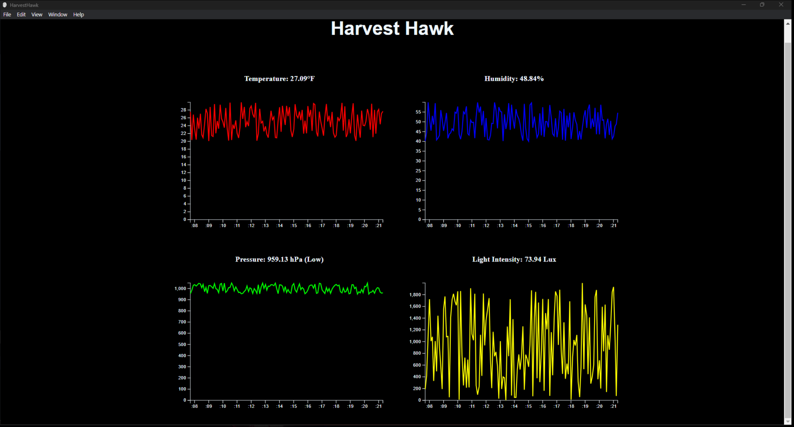

Harvest Hawk
Agricultural robotics system led from concept through development, integration, and team execution.


Overview
Harvest Hawk is an agricultural robotics system that I originated and led from initial concept through development and execution. The project was created to address real-world agricultural monitoring needs through the integration of sensing, embedded systems, and coordinated subsystem design. As project lead, I was responsible not only for guiding the overall direction of the project, but also for contributing directly to the CAD design, electrical systems, and programming required to bring the system to life.
Objectives Demonstrated
Objective 1: Design and complete robotic and embedded systems solutions that apply to real-world situations and challenges.
Harvest Hawk meets this objective because it was developed as a complete robotics solution for a real agricultural monitoring problem. The system was designed to sense, collect, and represent useful environmental information in a way that could support real-world agricultural analysis. Because the project moved from concept to implementation and functioned as a practical engineering solution, it demonstrates my ability to design and complete an embedded robotics system for a realistic challenge.
Objective 2: Implement a simple microprocessor using digital logic design.
Harvest Hawk meets this objective by using a microcontroller to manage sensing behavior, process inputs, and support automated system operation. The project required processor-driven control to handle environmental data collection and system response. That demonstrates practical implementation of microprocessor logic within a working embedded engineering application.
Objective 5: Design and analyze real-time embedded systems, including advanced digital logic design, signal processing and highspeed digital systems.
Harvest Hawk meets this objective through real-time embedded sensing and data collection. The system continuously gathers environmental data such as temperature, humidity, pressure, and light intensity, requiring the controller to process incoming information and maintain reliable operation as conditions change. The data image shown above serves as evidence that the system produced active measured outputs rather than existing only as a design concept.
Objective 6: Implement and evaluate algorithms and methods enabling autonomy in a mobile robot
Harvest Hawk meets this objective by incorporating automated sensing and embedded decision-making methods that support autonomy-oriented robotic behavior. While the project is more focused on monitoring than on autonomous navigation, it still applies logic-based system behavior that responds to environmental inputs without requiring constant manual control. Evaluating the system through collected outputs and observable functionality demonstrates this objective in practice.
Evidence of Functionality
The images above provide direct evidence that the project moved beyond planning into implementation. The system image shows the robotics build itself, while the data image shows real measured outputs generated by the embedded system. Together, these demonstrate both physical completion and functional sensor-driven behavior.
Key Contributions
- Created the original project concept and helped define the system vision
- Led the team throughout the development and implementation process
- Contributed to CAD design and overall mechanical layout
- Worked on electrical design and subsystem integration
- Contributed to programming and control logic development
- Guided full system coordination to ensure the project functioned as a complete solution